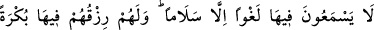
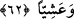
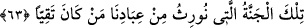

62. Orada boş söz değil, yalnız selam işitirler. Orada sabah akşam rızıkları da
hazırdır.
“Orada boş söz değil, yalnız selâm işitirler.” Orada yalnızca meleklerin onlara veya
birbirlerine selâm verişini işitirler. Yani bu cennetlerde bulunanlar boş ve fuzûlî söz
işitmezler. Bu, cennet ehlinden boş söz sâdır olmadığından kinâyedir. Âyette bu dünyada
da mümkün olduğu kadar boş sözden kaçınmak gerektiğine işâret vardır.
“Orada sabah akşam rızıkları da hazırdır.” Burada kasdedilen, rızkın devamlı
olduğudur. Nitekim “Ben sabah akşam filancanın yanındayım” denilince devamlı onunla
olunduğu kasdedilir. Onların yiyeceklerinin akşam ve sabah miktarınca verileceği de
söylenmiştir. Çünkü orada gece ve gündüz yoktur. Onlar devamlı olarak bir nur
içindedirler. Allah cenneti böyle vasfetmiştir, çünkü Araplar sabah ve akşam olan
rızıktan daha üstün bir geçim tanımazlar.
İmam Râzî, tefsîrinde şöyle der: “Eğer ‘Âyetlerde kasdedilen, büyük görülen
şeylerle cennetin vasfedilmesi ise sabah ve akşam kendilerine rızık ulaşması önemli bir
şey değildir.’ denilirse, buna şöyle cevap veririz: Hasan Basrî şöyle demiştir: “Allah
Teâlâ, dünyada her topluluğun sevdiği şeylerle onları teşvik etmek istemiştir. Bundan
dolayı Allah Teâlâ cennet nimeti olarak Acemlerin âdeti olan altın ve gümüş kaplar ile
ipek elbiseleri; Yemen’in ileri gelenlerinin âdeti olan koltukları zikretmiştir. Araplar’ın
ise sabah ve akşam yemeğinden daha çok sevdiği bir şey yoktur.”
et-Te’vîlâtü’n-Necmiyye’de şöyle der: “Orada sabah akşam rızıkları” yâni Allah
Teâlâ’yı görmek (rü’yetullah) “da hazırdır” Nitekim bir haberde “Allah katında
kulların en değerlisi sabah akşam O’nun cemâlini seyredenlerdir.”[32] denilmiştir.”
63. İşte kullarımızdan muttakîlere vereceğimiz cennet budur.
“İşte kullarımızdan muttakîlere” yani şirkten ve isyanlardan kaçınanlara, Allâh’a
itâat edenlere “vereceğimiz” yukarıda zikredilen vasıfları sana bildirilen ve duyup
işittiğin “cennet budur.”
Yani miras bırakanın malını mirasçısına bırakıp o maldan onu faydalandırdığımız
gibi,takvâları sebebiyle onları da cennetlerde ikâmet ettirip onlardan faydalandırırız.
el-Es’iletü’l-Mukhime’de şöyle der: “Mîras bir şahıstan başka bir şahsa intikal eden
şey olduğu halde âyette nasıl “mirasçı kılacağımız/vereceğimiz” buyrulmuştur?” Bu
sorunun cevabı şudur: Bu, benzetme şeklinde söylenmiştir. Mîrasta neseb yakınlığı nasıl
kazanmadan ve zahmet çekmeden mülk edinmeye sebepse, amellerin de cennetlere